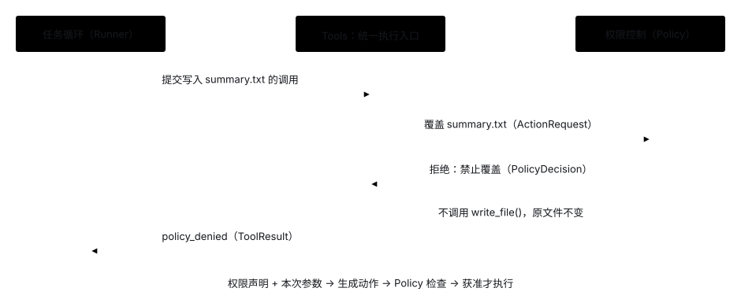
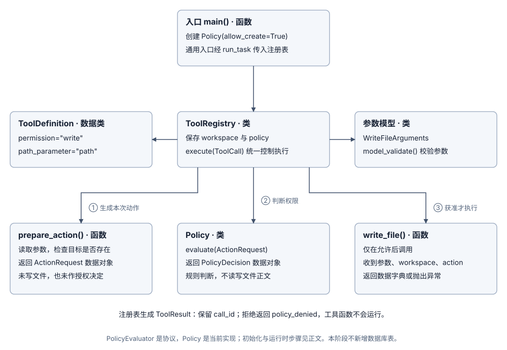

阶段 2：用 Policy 控制动作权限
1. 问题起点：如何在执行工具前拦截危险操作？
当 Agent 具备写入文件的能力（write_file）后，就会带来误改已有文件的风险。考虑以下场景：
- 用户：“把资料整理成一份摘要并保存。”
- 模型：调用
write_file(path="notes.txt", content="...")，试图直接覆盖工作区原有的资料文件。
如果工具一收到调用就直接落盘，原有资料就会被破坏。因此，程序必须在真正执行工具函数之前增加权限检查（Policy）：允许新建文件，但默认禁止覆盖已有文件。
期望达到的效果：
- 新建文件正常放行：目标路径不存在时，识别为
create动作并允许写入。 - 覆盖操作严格拦截：目标路径已存在时，识别为
overwrite动作并由 Policy 拒绝，write_file()函数不会执行，原文件内容保持不变。 - 拒绝结果可反馈：拦截后返回带原
call_id的policy_denied回执，供模型知晓原因并调整下一步动作。
2. 选定方案：权限声明 + 注册表统一拦截
- 动作如何识别：工具注册时声明所需权限类别（如
read、list、write）和路径参数名（path_parameter="path"），由共享函数prepare_action()结合目标文件是否存在，生成具体的ActionRequest（如区分create与overwrite）。 - 规则如何判断：
Policy对象保存权限开关与可选的文件名单，通过evaluate()方法按条件分支返回PolicyDecision。 - 在哪里拦截执行：在
ToolRegistry.execute()入口处集中检查——Policy 拒绝则直接返回policy_denied回执；获准后才调用实际工具函数。普通工具函数无需自己编写权限判断逻辑。
为什么要在注册时声明权限元数据？
看 WRITE_FILE 的注册定义（filesystem.py）：
WRITE_FILE = ToolDefinition(
name="write_file",
description="写入一个工作区文件...",
arguments_model=WriteFileArguments, # 参数模型：path, content
function=write_file, # 底层写文件的普通函数
permission="write", # 声明 1：权限类别为“写入意图”
path_parameter="path", # 声明 2：去参数中找名为 "path" 的字段提取目标路径
)模型发起调用时传过来的只是普通 JSON 字典（如 {"path": "notes.txt", "content": "..."}）。通过声明 permission 与 path_parameter，共享函数 prepare_action() 就能自动提取路径并探查磁盘，避免为每个工具重复编写参数解析与文件探查代码。
为什么是“注入权限规则”，而不是直接增删工具？
在应用启动时（__main__.py），开发者创建 Policy 实例并作为参数传入 ToolRegistry：
policy = Policy(
allow_read=True,
allow_create=True,
allow_overwrite=False # 默认禁止覆盖
)
tools = ToolRegistry(
definitions=[LIST_FILES, READ_FILE, WRITE_FILE],
workspace=WORKSPACE,
policy=policy # <-- 将规则外部注入工具注册表
)“工具管能力，Policy 管开关”。通过外部注入 Policy 管理权限，具有三大工程优势：
- 支持细粒度白名单：例如设置
Policy(allow_create=False, create_files=frozenset([Path("notes.txt")]))，能做到“全局只读，但特批允许新建某一个文件”，这是直接删掉工具做不到的。 - 具备因果感知与友好解释：模型调用未授权工具时会收到结构化的
policy_denied回执，能礼貌向用户解释“该操作已被安全策略拦截”，而不是因找不到工具而产生幻觉。 - 工具集统一，环境动态切换：同一套代码和工具定义，只需在启动时注入不同的 Policy 实例，就能无缝切换“只读模式”、“沙箱新建模式”或“生产覆盖模式”。

3. 源码追踪：一次覆盖请求是如何被拦截的？
3.1 函数、类与权限数据对象的关系
Policy 负责保存规则并执行判断，PolicyEvaluator 是注册表依赖的协议；prepare_action() 与 write_file() 是普通函数；ActionRequest、PolicyDecision、ToolCall 和 ToolResult 是传递请求、决定与回执的数据类。

3.2 一次覆盖请求的完整调用顺序（5 步协同闭环）
当一个外部配置了“禁止覆盖”策略的 Agent 面临覆盖写时，系统经历以下确定性的 5 步协同闭环：
- 步骤 1（启动注入 · __main__.py）：开发者在启动时创建
Policy(allow_create=True, allow_overwrite=False)并传入ToolRegistry。 - 步骤 2（模型表达意图 · runner.py）：模型发出工具调用
write_file(path="notes.txt", content="...")。模型只表达业务意图并给出参数，绝不决定自己是新建还是覆盖。 - 步骤 3（系统探查物理状态 · prepare_action()）：
ToolRegistry根据path_parameter="path"提取目标路径notes.txt，调用lstat()探查物理磁盘。发现目标文件已存在，客观判定为覆盖写，生成ActionRequest(operation="overwrite", resource="notes.txt")（此时尚未写文件）。 - 步骤 4（策略审查 · Policy.evaluate()）：
ToolRegistry询问注入的 Policy。Policy 检查发现allow_overwrite=False，返回PolicyDecision(allowed=False, reason="禁止覆盖已有文件")。 - 步骤 5（安全拦截与回执 · ToolRegistry.execute()）：
ToolRegistry看到allowed=False，立即阻断物理写入，磁盘原文件毫发无损，并向 Runner 返回带有原call_id与拦截原因的ToolResult(status="policy_denied")。
3.3 规则配置与拒绝回执保存在哪里
Policy 的权限开关与白名单保存在应用内存中；当动作被拒绝时，policy_denied 作为标准 ToolResult 追加到当次运行的 messages 列表中，供下一轮模型请求读取。
4. 运行禁止覆盖实验
uv run python -m examples.policy_no_overwrite
实验脚本在临时目录中复用与 Runner 完全相同的 ToolRegistry.execute() 路径，连续发起两次写入：
- 第一次调用（目标文件不存在）：识别为
create，写入成功，文件内容为“原内容”。 - 第二次调用（目标文件已存在）：识别为
overwrite，返回policy_denied（原因：“禁止覆盖已有文件”），再次读取文件仍为“原内容”。
5. 本地测试与实现边界
uv run pytest tests/test_policy.py tests/test_tools.py tests/test_application.py
- 动作识别与原文件保护（test_policy.py）：验证首次写入识别为
create、二次写入识别为overwrite，且被拒绝后磁盘原文件毫发无损。 - 新工具统一受控（test_tools.py）：验证任何新注册的普通函数都会经过
ToolRegistry的统一权限检查，拒绝后函数体绝不执行。
当前文件写入工具的底层安全限制
获准新建文件后，底层仍采用独占创建模式（x 模式）：若并发请求抢先创建了同名文件，会返回 file_exists 回执而不会演变成覆盖。同时禁止通过符号链接写入，父目录必须已存在，单次写入上限为 16,000 个 UTF-8 字节（当前支持 macOS / Linux）。